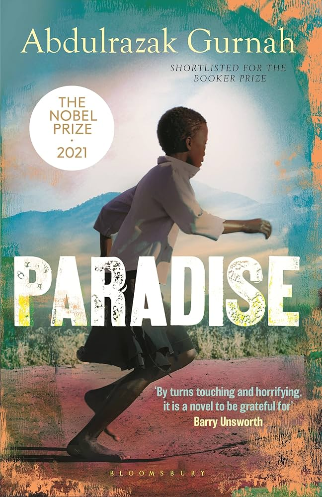

Paradise
Fiction
Postcolonial
African Literature
Description
Paradise is a powerful coming-of-age story set in early 20th-century East Africa, just before European colonial powers fully tighten their grip. It follows Yusuf, a young boy from a modest family, who is pawned into servitude to settle his father's debts and embarks on a transformative journey with a merchant caravan across unfamiliar lands.
Through Yusuf's eyes, Abdulrazak Gurnah (Nobel Prize in Literature 2021) explores themes of innocence and corruption, tradition versus colonialism, identity, belonging, and the harsh beauty of pre-colonial Africa. A tragic love story and a subtle critique of cultural disruption, the novel was shortlisted for the Booker Prize and marked Gurnah's international breakthrough.
Book Details
Publisher
Hamish Hamilton
ISBN
978-0-06-231500-7
Publication Date
Dec 18, 2014
File Size
8.7 MB (PDF)
Format
PDF, EPUB